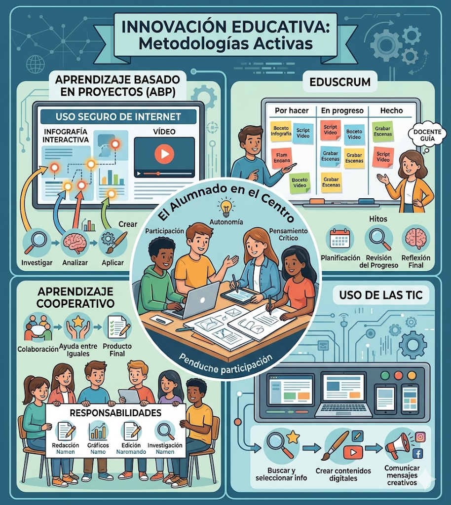

La presente Situación de Aprendizaje se fundamenta en el uso de metodologías activas que sitúan al alumnado en el centro del proceso de enseñanza-aprendizaje, fomentando su participación, autonomía y pensamiento crítico.
- Aprendizaje Basado en Proyectos (ABP)
Se emplea el Aprendizaje Basado en Proyectos como metodología principal, ya que el alumnado trabajará en la elaboración de un producto final significativo (infografía interactiva y vídeo), relacionado con una situación real: el uso seguro de Internet.
A través de este enfoque, el alumnado investigará, analizará información y aplicará los conocimientos adquiridos para crear contenidos propios, favoreciendo un aprendizaje significativo.
- EduScrum
Para la organización del trabajo en grupo, se utilizará la metodología EduScrum, que permite estructurar el proyecto en pequeñas tareas y fomentar la autonomía del alumnado.
El trabajo se desarrollará en equipos cooperativos, donde cada grupo se organizará para alcanzar los objetivos propuestos. Se establecerán:
- Pequeñas reuniones de planificación al inicio del trabajo.
- Revisión del progreso de las tareas durante el desarrollo del proyecto.
- Reflexión final sobre el trabajo realizado.
El docente actuará como guía del proceso, facilitando el aprendizaje sin dirigir en exceso el trabajo del alumnado.
- Aprendizaje cooperativo
El alumnado trabajará en grupos, favoreciendo la colaboración, el reparto de responsabilidades y la ayuda entre iguales. Cada miembro del grupo participará activamente en la elaboración de los productos finales.
- Uso de las TIC
Las Tecnologías de la Información y la Comunicación (TIC) se integran como herramienta fundamental para el aprendizaje, permitiendo al alumnado:
- Buscar y seleccionar información.
- Crear contenidos digitales.
- Comunicar mensajes de forma creativa.
